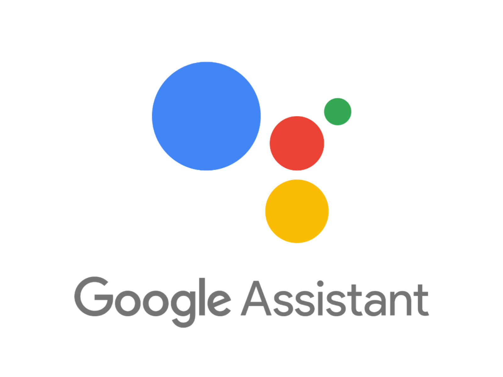
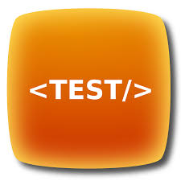

Building a multichannel bot with Tock
Notion of connector
A Tock connector allows you to integrate a bot into an external communication channel (text or voice). Aside from the test connector type (used internally by the Tock Studio interface), connectors are associated with channels external to the Tock platform.
The whole point of Tock connectors lies in the ability to develop conversational assistants independently of the channel(s) used to talk to it. It is thus possible to create a bot for a channel, then make it multichannel later by adding connectors.
The Web connector has the particularity of exposing a generic API to interact with a Tock bot. As a result, it allows even more integrations on the "frontend" side, using this API as a gateway.
This page actually lists:
- The connectors provided with the Tock distribution:






- The kits using the Web connector to integrate other channels:


Connectors provided with Tock
Tock provides many connectors for different types of channels (see below). New connectors are regularly added to the platform, depending on project needs but also on the schedule for opening public channels to bots.
Examples: arrival of Google Home in France in 2017, Alexa in 2018, opening of WhatsApp APIs then Business Chat in 2019, etc.
To learn more about the referenced bots using this or that connector in production, do not hesitate to consult the page Tock showcase.
Messenger
- Channel : Facebook Messenger
- Type : text (+ voice via voice message upload )
- Status : Tock connector used in production since 2016
The guide Connect your bot to Messenger explains how to integrate a bot Tock with a Facebook page / [Messenger] (https://www.messenger.com/).
To learn more about this connector, you can also go to the folder connector-messenger on GitHub, where you will find the sources and the README of the connector.
Slack
- Channel : Slack
- Type : text
- Status : Tock connector used outside production
The guide Connect your bot to Slack explains how to integrate a bot Tock with a Slack channel.
To learn more about this connector, you can also go to the folder connector-slack on GitHub, where you will find the sources and the README of the connector.
Google Assistant / Home
- Channel: Google Assistant / Google Home
- Type: text + voice
- Status : Tock connector used in production since 2017
To learn more about this connector, see its sources and its README in the folder connector-ga on GitHub.
Alexa / Echo
- Channel : Amazon Alexa / Amazon Echo
- Type : voice
- Status: Tock connector used in production since 2018
Important note: in the case of Alexa, the NLP model is necessarily built and hosted at Amazon.
Only the conversational framework part of Tock can be used.
To learn more about this connector, see its sources and its README in the connector-alexa folder on GitHub.
# Rocket.Chat
- Channel : Rocket.Chat
- Type : text
- Status : to be specified
To learn more about this connector, see its sources and its README in the folder connector-rocketchat on GitHub.
- Channel : WhatsApp from Facebook
- Type : text
- Status : Tock connector used in production since 2019
To learn more about this connector, see its sources and its README in the folder connector-whatsapp on GitHub.
Teams
- Channel : Microsoft Teams
- Type : text + voice
- Status : Tock connector used in production since 2019
To learn more about this connector, see its sources and its README in the folder connector-teams on GitHub.
Business Chat
- Channel : Apple Business Chat (Messages)
- Type : text
- Status : Tock connector used in production since 2019
To learn more about this connector, see its sources and its README in the folder connector-businesschat on GitHub.
- Channel : Twitter (private messages)
- Type : text
- Status : Tock connector used in production since 2019
To learn more about this connector, see its sources and its README in the folder connector-twitter on GitHub.
Allo-Media
- Channel : Allo-Media (telephony)
- Type : voice
- Status : Tock connector used in production since 2020
This connector was developed for the AlloCovid bot. For more information, see the AlloMediaConnector class with the bot sources on GitHub.
Google Chat

- Channel : Google Chat (formerly Google Hangouts)
- Type : text
- Status : Tock connector used outside of production
To learn more about this connector, see its sources and README in the connector-google-chat folder on GitHub.
Web generic
This generic connector allows you to integrate a Tock bot into any website or application: portal, web or mobile application, REST client, etc.
The connector exposes a REST API to the bot, easily integrated from any web or mobile application, or programming language.
Several kits and components based on the Web connector are already available to integrate Tock bots into different sites and applications, such as websites with React, native mobile applications with Flutter or even intranets SharePoint.
- Channel : Web (generic for all sites & web applications)
- Type : text
- Status : Tock connector used in production since 2020
To learn more about this connector, see its sources and its README in the folder connector-web on GitHub. It contains examples and documentation in Swagger format of the REST API.
Test (generic)
This connector is internal to Tock, it is used to communicate with a bot directly in the Tock Studio interface (Test > Test the bot view) by emulating other connectors.
Integrations via the Web connector
The Web connector exposes a generic API to interact with a Tock bot. As a result, it allows even more integrations on the "frontend" side, using this API as a gateway.
React
This React component integrates a Tock bot and renders it graphically in a web application. The web application communicates with the bot via a Web connector.
- Integration : React (JavaScript / JSX)
- Type : Web applications
- Status : Used in production since 2020
For more information, see the sources and the README in the repository
tock-react-kit on GitHub.
Flutter (beta)
This Flutter component integrates a Tock bot and provides its graphical rendering in a mobile or web application. The app communicates with the bot via a web connector.
- Integration: Flutter (Dart)
- Type: Native mobile and web apps
- Status: Beta, in development
For more information, see the sources and the README in the
tock-flutter-kit repository on GitHub.
SharePoint (beta)
This WebPart component allows you to integrate a Tock bot into a SharePoint site. It embeds the tock-react-kit to communicate with the bot via a Web connector and manage the graphic rendering of the bot in the SharePoint page.
- Integration : Microsoft SharePoint
- Type : Websites & Intranets
- Status : Beta, in development
For more information, see the sources and the README in the
tock-sharepoint repository on GitHub.
Voice technologies
Tock bots process sentences in text format by default (chatbots). However, voice technologies can be integrated into the bot's "terminals" in order to obtain voice conversations (voicebots and callbots):
- Translation of voice into text (Speech-To-Text) upstream of the processing by the bot (ie. before the NLU step)
- Translation of text into voice (Text-To-Speech) downstream of the processing by the bot (ie. voice synthesis of the bot's response)
Some connectors provided with Tock allow a bot to be integrated into an external channel managing the STT and TTS voice aspects.
In addition, other voice technologies have been integrated into Tock in recent years. They are mentioned for information purposes, even when no ready-to-use connector is provided.
Google / Android
Google's Speech-To-Text and Text-To-Speech functions are used through the Google Assistant / Home connector, also by the voice functions of the Microsoft Teams app for Android compatible with the Teams connector, as well as within the Android platform in particular for native mobile developments.
- Technology : STT & TTS Google / Android
- Status : used with Tock in production (via connectors Google Assistant / Home, Microsoft Teams and natively Android for botsintegrated on-app)
Apple / iOS
Apple's Speech-To-Text and Text-To-Speech features are used through the Business Chat connector, as well as within iOS for native mobile developments.
- Technology : STT & TTS Apple / iOS
- Status : used with Tock in production (via Business Chat connector and natively iOS for integrated on-app bots)
Amazon / Alexa
Alexa (Amazon) Speech-To-Text and Text-To-Speech functions are used through the Alexa connector / Echo.
- Technology: STT & TTS Amazon / Alexa
- Status: used with Tock in production (via Alexa connector)
Allo-Media & Voxygen
The company Allo-Media offers an AI platform based on phone calls.
Voxygen offers speech synthesis services.
On the occasion of the development of the AlloCovid bot, an Allo-Media connector was developed to integrate the bot (Tock) with the Allo-Media services: Speech-To-Text and Text-To-Speech with Voxygen.
- Technology: Allo-Media & Voxygen
- Status: used with Tock in production (via Allo-Media connector)
Nuance
Nuance offers speech recognition & AI solutions.
For voice command experiments in 2016, Nuance had been integrated with Tock for its Speech-To-Text functions.
Although this integration has not been maintained since, it worked after a few days of implementation.
- Technology: Nuance
- Status: used with Tock in 2016
Connector architecture & data governance
With a view to governance of conversational models and data, the Tock connector architecture has several advantages:
- The model is built in Tock, it is not shared via connectors
- The choice of a bot's connectors allows you to control the propagation (or not) of conversations
For example, for a bot internal to a company, you can choose to use only connectors
to its own channels (website, etc.) or internal to the company (enterprise applications, professional space on
an Android phone, etc.).
- Even if a bot is connected to several external channels/partners, only the Tock platform has all the conversations on all these channels.
Developing your own connector
It is possible to create your own Tock connector, for example to interface a Tock bot with a channel specific to the organization (often a specific website or mobile application), or when a general public channel opens to conversational bots and the Tock connector does not yet exist.
The Bot Framework section of the Tock developer manual gives instructions for implementing your own connector.